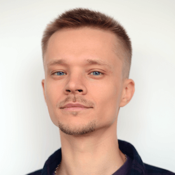

Evgeniy Zhukov
Lead Backend Engineer

Phone: +33 7 81 18 22 97Email: evgeniy.zhukov.dev@gmail.com
GitHub: https://github.com/jeki-aka-zer0
LinkedIn: https://linkedin.com/in/evgeniy-zhukov
Location: Paris, France. Fully authorized to work
Technically savvy software engineer with 12 years of professional experience in Web development. I prefer clean and stable code, but I also understand the importance of quick hypothesis testing. I have strong hard and soft skills. I enjoy both writing code and learning new technologies, as well as researching problems and opportunities in the product, solving them, and communicating with product owners and customers. I have a great experience in Agile methodologies.